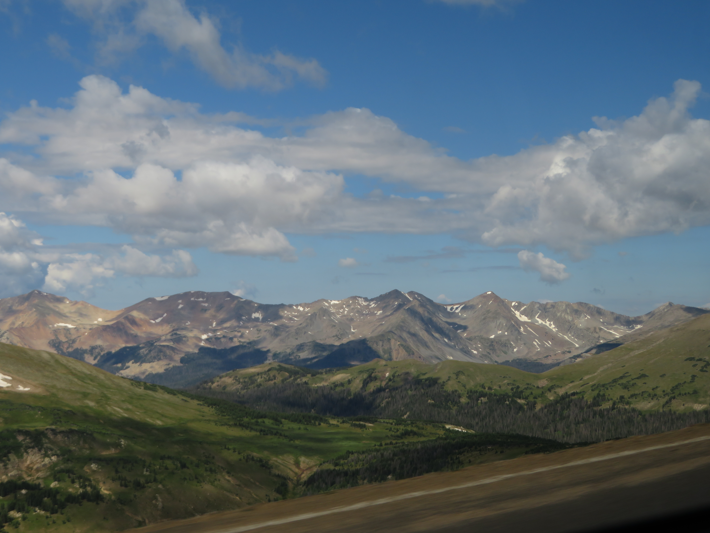

Colorado's Rocky Mountain National Park is very similar to Glacier National Park, containing stunning alpine scenery and plenty of opportunities for wildlife. The park is quite large as well, with plenty to see and do across a multi-day visit, from trekking across the barren alpine tundra to admiring the crystal clear alpine lakes in all its grandeur.
Trail Ridge Road is the main road connecting the entire park, and it is absolutely stunning! Being the highest road in the national park system reaching up to 3713 meters above sea level, the road passes by tons of cool attractions. Starting on the park's east side, the road begins at Sheep Lakes (Left), a picturesque valley full of wildlife, before rising up to the iconic alpine tundra landscape of the Trail Ridge Mountains (Center), and finally going back down towards the emerald green Kawuneeche Valley (Right). With so much incredible scenery, there are plenty of great hikes and viewpoints along this road, including Medicine Bow, Gore Range, and Rainbow Curve Overlooks as well as the Tundra Communities and Forest Canyon trails. The beautiful landscapes along this road certainly make it a must-drive, especially during the summer.

The other notable part of the park is the Bear Lake area, located on the very East side of the park. This area is home to some of the most beautiful alpine lakes in the entire park, and on my visit, I hiked the Trail to Emerald Lake (Top Right), passing by both the Bear Lake (Top Left) and the aptly named Dream Lake (Top Center), which were all breathtaking to view up close and totally worth the hike. The waterfalls don't disappoint either, with Alberta Falls (Bottom Left) being the main one in the area. On both the Alberta Falls and Emerald Lake Trail, I was treated with some adorable chipmunks (Bottom center and bottom right) on the hike which were such a joy to see within the gorgeous scenery.


The wildlife in Rocky Mountain National Park is just as abundant as its landscapes. My favorite though, has to be Moose, the largest species of deer in the world. I had so many moose sightings in the park, with highlights including this massive Bull Moose on the side of the road (Top Left and Top Center) and another beautiful Bull Moose on the lakeshore (Top right) nearby. Both of these sightings occured at Sheep Lakes on the East side of the park, my favorite place to see Moose in the park. The park's west side is also fantastic to find moose, as I had sightings of 3 Moose on the side of the road (Bottom Left) in Kawuneeche Valley as well as a Moose on the side of the road (Bottom Center) in the town of Grand Lake just outside the park, both breathtaking to witness in person. However, by far my favorite Moose encounter had to be the three Bull Moose (Bottom Right, 2 shown here) I saw right below the Alpine Visitor Center, a place where they aren't usually found. Seeing 3 Bull Moose at the same time was just magical, and with tons of other cool moose sightings across just a 4-day visit, this park has to be one of the best places in the country to see these enormous and fascinating creatures in the wild.


Along with moose, so much other wildlife can be found here, including Mule Deer (Top Left), which I've seen the biggest herds of in the Eastern part of the park, as well as Elk (Top Center and top right), the most abundant large mammal here. Visiting in the summer would almost guarantee an elk sighting in the park, as they are found basically everywhere, with my highlights occuring in the Alpine regions of the park. Another notable large mammal I saw in the park was a single Bighorn Sheep (Bottom left) at Sheep Lakes, which usually come down here in herds from higher elevations to search for nutrients. Small mammals are also extremely common at Rocky Mountain, like the afromentioned Chipmunk (Bottom center), squirrels, pikas, and marmots, and rabbits (Bottom right), which are all found across all parts of the park, including at the highest elevations. From big to small, the sheer diversity of wildlife in Rocky Mountain National Park combined with the stunning mountain scenery are so impressive in my opinion and absolutely makes it a top tier park to me.